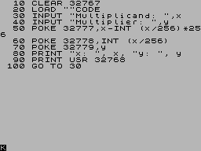

A Z80 assembler powered by ruby.
Author |
Rafał Michalski (royaltm75@gmail.com) |
Yo, dig it:
require 'z80'
class ZXMath
module Macros
def mul8(eh, el, th, tl) # performs hl * a using (a, th, tl)
# stops on CARRY out
# result to (eh|el)
raise ArgumentError unless th|tl != hl
ns do |eoc|
ld tl, l
ld th, h
ld hl,0
loop1 srl a
jr NC, noadd
add hl, th|tl
jr C, eoc
noadd jr Z, ok
sla tl
rl th
jp NC, loop1
ok label
unless eh == h and el == l
ld el, l
ld eh, h
end
end
end
end
include Z80
export mul
mul mul8(b, c, d, e)
ret NC
rst 0x08 # ERROR-1
data 1, [0x0A] # Error Report: Integer out of range
end
class Program
include Z80
include Z80::TAP
ld hl, [multiplicand]
ld a, [multiplicator]
jp math.mul
org 0x0020
multiplicand words 1
multiplicator bytes 1
import :math, ZXMath
end
calc = Program.new 0x8000
calc.save_tap('calculator', :append => true)
now:
puts calc.debug
check this out:
8000: 2A2080 ld hl, (8020H) -> multiplicand 8003: 3A2280 ld a, (8022H) -> multiplicator 8006: C32380 jp 8023H -> math.mul 8009: 00 00 00 00 00 00 00 00 ........ 8011: 00 00 00 00 00 00 00 00 ........ 8019: 00 00 00 00 00 00 00 ....... 8020: 00 00 .. :multiplicand 8022: 00 . :multiplicator 8023: :math ====== ZXMath =============== 8023: :mul 8023: 5D ld e, l 8024: 54 ld d, h 8025: 210000 ld hl, 0000H 8028: CB3F srl a :mul.loop1 802A: 3003 jr NC, 802fH -> noadd 802C: 19 add hl, de 802D: 380B jr C, 803aH 802F: 2807 jr Z, 8038H :mul.noadd -> ok 8031: CB23 sla e 8033: CB12 rl d 8035: D22880 jp NC, 8028H -> loop1 8038: 4D ld c, l 8039: 44 ld b, h 803A: D0 ret NC 803B: CF rst 08H 803C: 0A .
go to ZX Spectrum:
10 CLEAR 32767 20 LOAD "" CODE 30 INPUT "Multiplicand: ", x 40 INPUT "Multiplicator: ", y 50 POKE 32800, x-INT(x/256)*256 60 POKE 32801, INT(x/256) 70 POKE 32802, y 80 PRINT "x: ", x, "y: ", y 90 PRINT USR 32768 100 GOTO 30 RUN
and load calculator.tap

More study at:
See examples in examples dir.
Also features:
bin/zxconv
(requires RMagick rmagick.rubyforge.org/)
ZXCONV 0.2: Importing images to ZX Spectrum is fun!
Usage:
zxconv source destination [options]
rendering options:
-m, --mode 0|1|2|3|4 color mode
0: 15 colors
1: 8 basic colors
2: 8 bright colors
3: 15 colors, bright colors have priority
4: 15 colors, basic colors only on black backgrounds
-d, --dither n|r|f[n|r|f] dithering mode phase1,phase2
n: none
r: riemersma
f: floyd-steinberg
-c, --colors CCC.... list of allowed color indexes (0..7)
-0..15, --bg N background color (0..15)
-r, --ratio N/N bright/basic color level ratio
-l, --[no-]autolevel apply auto level to source image
-g, --[no-]autogamma apply auto gamma to source image
destination format and content:
-f, --format t|b|r zx spectrum data file format
t: save as TAP; one file is created
b: save as binary data; separate files for scr and bitamp
r: save as ruby source
a: save as assembler source
-s, --[no-]savescr save data as zx screen (6912 bytes)
-b, --[no-]savebin save b/w bitmap raw data
-a, --[no-]saveattr save attributes raw data
-i, --[no-]saveimg save as normal image
(format determined by destination ext.)
default options are:
-m0 -dn -r4/3 -0 -ft -s -i

zxconv -m4 -l --no-savescr horse.jpg horse.png